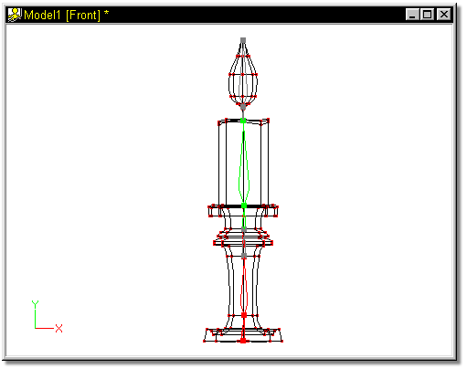
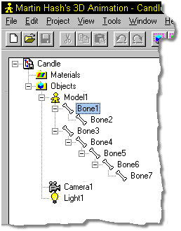
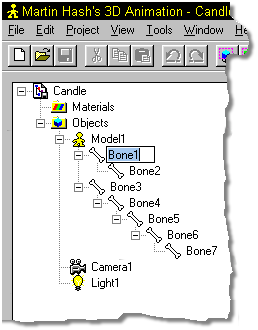
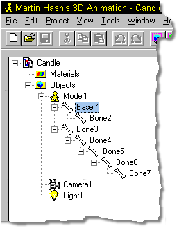
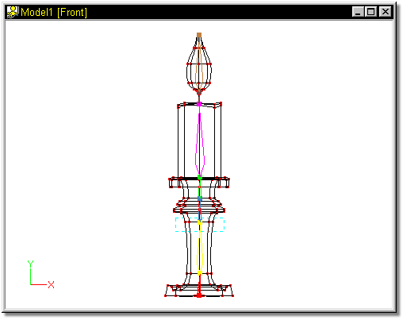
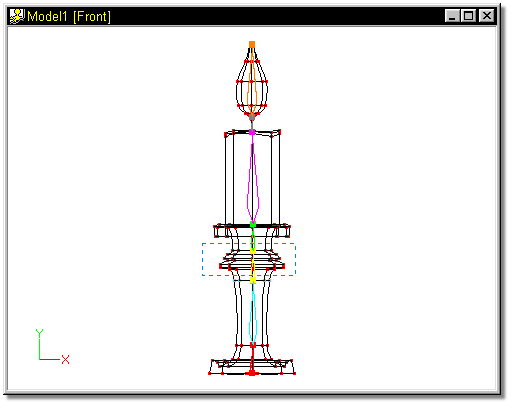
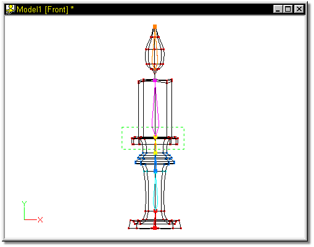
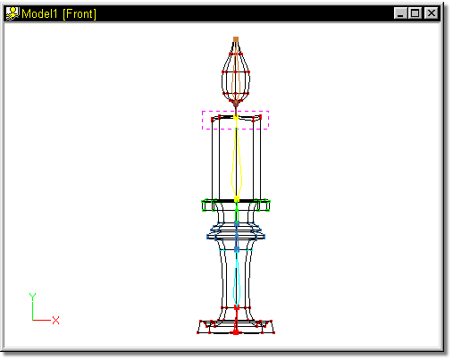
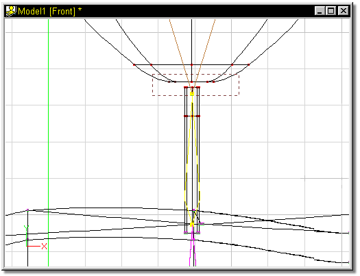
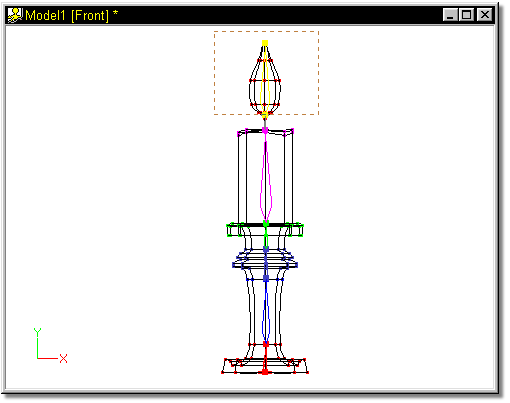

The candle model will use 4 more bones. Once to the top of the base, one for
the candle itself, one for the wick, and one for the flame. Use the Add button
and add these bones to the model, starting each one over the handle at the small
end of the previous bone.
The candle model will use 4 more bones. Once to the top of the base, one for
the candle itself, one for the wick, and one for the flame. Use the Add button
and add these bones to the model, starting each one over the handle at the small
end of the previous bone.


When you finish, your model should look similar to Figure 9 (the bone for the wick is difficult to see because it is small).

Figure 9
To help clarify which parts of the model each bone is going to effect, it is helpful to name the individual bones. This is done by clicking the name in the Project Workspace once to select it:

Figure 10
Then a second time to enter data (a blinking cursor will appear):

Figure 11
Type in “Base” and press Enter. An asterisk will appear after the name indicating unsaved changes.

Figure 12
Continue on, naming Bone2 as Base1, and the rest of the bones as follows:
Base2
Base3
Candle
Wick
Flame
If the bone hierarchy in your project window does not match the one shown here, don’t worry… it will be altered later.
Now that the bones have been added to the model, the next step is to associate control points from the models mesh with specific bones. This is done by selecting each bone, then grouping the control points that are to be associated with them. The patriarch (first bone) does not get grouped, since by default, it controls all points on the model.
Begin assigning points by clicking the bone name “Base1” in the project workspace. The bone can also be selected by clicking on the bone in the main window. The bone will highlight yellow. Click the Bound Group button on the Tool Panel, and select the points shown in Figure 13.

Figure 13
Next, click the name “Base2” in the Project Workspace. Click the Group button once again, and select the points shown in Figure 14.

Figure 14
Repeat these steps for Base3.

Figure 15
Candle:

Figure 16
Wick (it will be necessary to zoom in to group the correct points):

Figure 17
And finally, Flame:

Figure 18